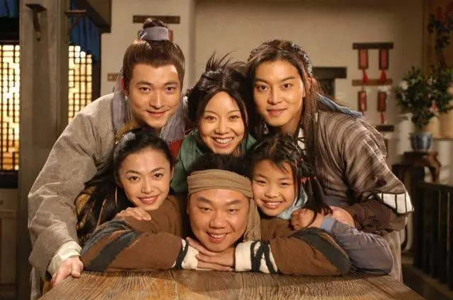
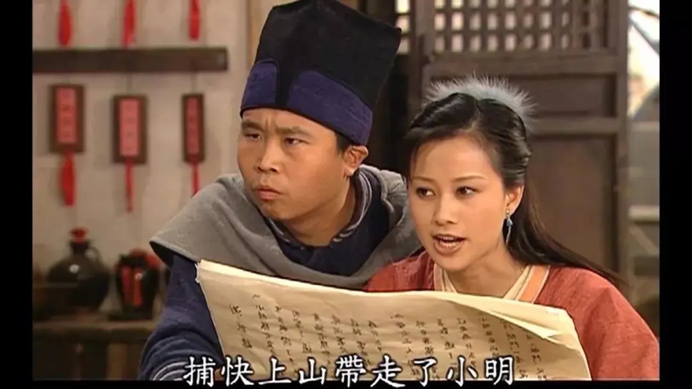
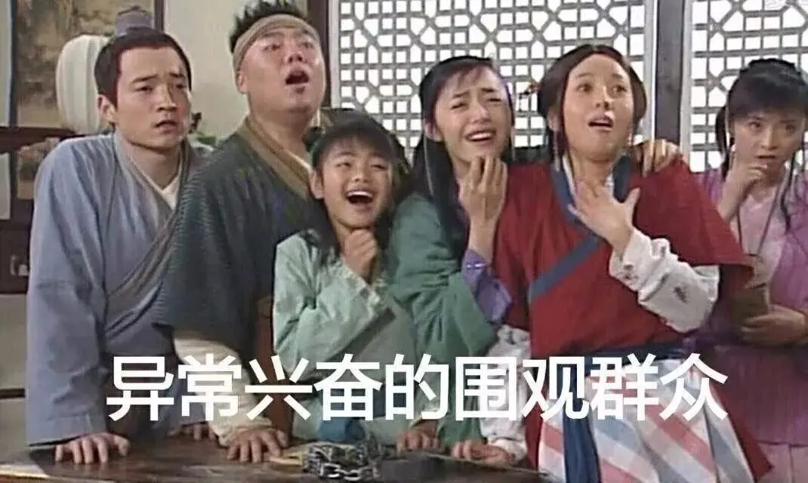
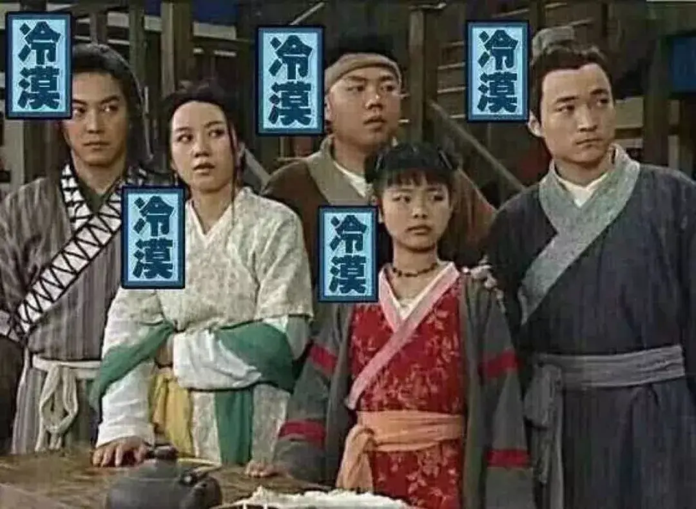
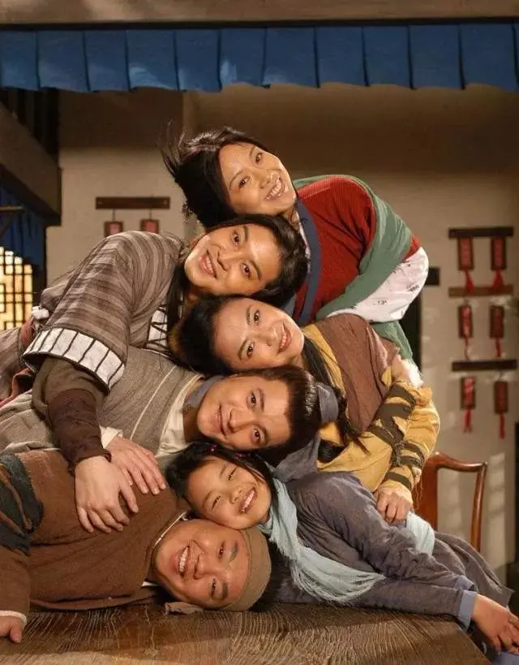
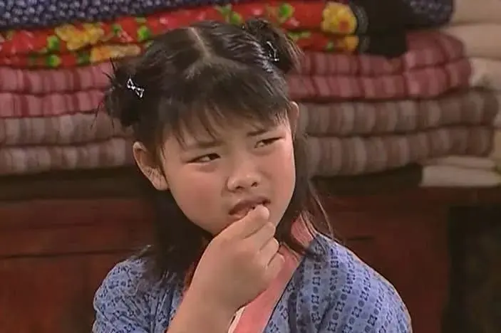

主站
主站 下载APP
下载APP
.svg)


.svg)


十三年过去了，它还是我心中的喜剧NO.1
就问，在国产喜剧历史上，有几部堪称“神剧”？
以豆瓣评分超9.0为评判标准，袭卷一代人童年记忆的《家有儿女》也落在了8.7的位置。
七俠镇，同福客栈，六扇门，西凉河，“葵花点穴手”和“额滴娘啊”——不陌生吧？
2006年在央视八套横空出世时，《武林外传》（以下简称《武林》）可谓一匹黑马，收视率低开高走，根据央视索福瑞提供的收视报告，第1天只有1.95%，到第10天已达到9.49%，称其为国产情景喜剧界无法复制的传奇毫不夸张。
那是观众还不会用视频网站追剧，不会充会员发弹幕的年代，听到电视机里一句“同福客栈，我回家了”，仿佛就置身于一间氤氲着饭菜烹香的老房子，耳边有爸妈扯着嗓子在喊：别看了——来吃饭！
这部轻喜剧场景简单、道具简陋，但并不妨碍它成为80、90后的成长烙印。它像一瓶陈年酒，不为了拿上高档餐桌撑台面，而是自己搁在家里的二锅头，真实不矫作，夏解暑冬暖身，愈久弥香，越老，越想着那一口。
当年的八十集扎扎实实地播完了，结局显示“上”八十回完，令无数人惊喜不已，期待着还有“下”八十回，谁知这一等就是十三年。
“八十”其实是个玄妙的概念，西游记九九八十一未满，《红楼梦》也正好整八十回。而《红楼梦》的第一回想必很多人都印象深刻：《甄士隐梦幻识通灵 贾雨村风尘怀闺秀》。
《武林外传》的第一回呢？《佟湘玉煞费良苦心 莫小贝梦游影视城》
——究竟是不是一场梦？
开播十周年纪念时，“郭芙蓉”姚晨在微博上说：“十年一觉武林梦。”佟掌柜闫妮紧接着应了一句：“还是江湖梦中人。”
Windows XP 早已下岗多年了。但这并不妨碍一支轻快的开机音效配上歌曲“嘿，兄弟，我们好久不见你在哪里”，就仿佛一场穿越回潮，倏地把人带回旧时光的某个场景，有酒有菜，有江湖。
序幕背后的人，曾经笑得花枝乱颤，今天偷偷泪流满面。
客官您年纪大了，长凳上坐稳喽，端上一碗陈年旧米饭，嗅嗅那香味儿还热腾着呢，您说奇怪不奇怪？
“武林”——或者说“江湖”，千百年来一直是中国人的一份情结和信仰。
金庸、古龙开创了由刀光剑影勾勒的武侠时代，一个典型的中国“江湖”有恩怨，有情仇，有重道义的自由竞争，有纵死犹闻侠骨香的侠客精神，但最常被提起来的，或许是两句话：其中一句是《武林》歌词里唱到的“人在江湖身不由己”。
“江湖”由具体的时代符号组成。
《武林》的故事背景设定在明代晚期，观众却只能看到一个小小的客栈，所有嬉笑怒骂心酸苦乐都发生在那个单一空间里，要去京城或其他哪，就站在客栈门槛上朝外头一喊。
它算得上半个穿越剧，时代符号结合了戏内外、古与今。Windows开机音乐、网络词汇、广告用语、流行歌曲以及综艺节目主持人台词……对各种听觉符号进行重新编辑组合，这甚至算得上超前的网络时代思维。
时不时跳出来的现代梗甚至道具，都把它置于了一个“此江湖非彼江湖”的魔幻语境下。
 它首先还是一个喜剧武林，恰似“笑傲江湖”。
初代网文作家出身的宁财神写了一个搞怪、无厘头、天马行空的剧本，重新解构了武侠元素。不少包袱直接来自网络段子，搞笑得一本正经，充斥着周星驰喜剧式的互联网拼贴方式，正好迎合了当年新生网民至爱的后现代趣味。
在充斥IP改编网剧狂欢热的今天，情景喜剧早已不被青睐了，不仅是低回报率的风险，现今编出的再多段子和笑料，似乎都有了股似曾相识的反刍感。
《武林》里的诸多笑点，至今变成网络段子和表情包，但背后蕴藉的，仍然是一段有血有肉的岁月。有的老梗本来不是梗，在人们心里住久了，也就成了经典。
十数年来，太多人去剖析《武林》的剧作和表演，盛赞它的时代价值。这当中自然少不了情怀加持，然而，如果只抱着博开怀的心态去观看一部真正的喜剧，主创团队的良苦用心便难免流俗。
钱钟书说：“幽默当然是用笑来发泄，但是笑未必就表示着幽默。”
无厘头的对白、各地方言糅杂、对传统艺术的模仿，加上打破时空叙事的结合，在一个貌似宏大的武林框架里建构出一个天马行空的世界。
人物并不是活在真正的古代，偶尔穿越，时常穿帮，增强与生活反差的同时，反倒模糊了“戏里”和“戏外”的界限，避开了现实的羁绊，使得琐碎的喜怒哀乐也可以达到强大的戏剧张力。
也正是这种无意识的世界构建，用轻松而讽刺的手法对江湖进行了解构。比如，佟掌柜偷藏小贝的信件被小郭看见，发生了如下对话：
小郭：“这万一是很紧急的信件呢？ ”
掌柜的：“有急事能往信上插根鸡毛么？明摆着是鸡毛蒜皮的小事。”
后来，莫小贝这个小屁孩当上了武林盟主，当上之后啥事不管，该上学上学，该调皮调皮。衡山派前来请顽童莫小贝回去当掌门，却两袖空空，连串糖葫芦也买不起，大谈所谓“帮派根基”。
但魔女小贝最终选择留下来，因为她认为自己做错了事（拆散了吕秀才和祝无双），因此有义务承担并解决问题。这不是什么江湖道义，这是未成年教育见了成效。
德国美学家里普斯在《喜剧与幽默》里称，喜剧发生在“能够吸引我们注意力的期待价值突然被不合时宜、对我们意义很小的另一种价值所取代时。这个价值最初吸引我们的注意力，因为它好像在某种意义上有期待价值，但很快我们就拆穿了它的伪装。”
这或许也是喜剧之于闹剧的区别之一：后者至多是笑出眼泪，前者则能让人笑中带泪。
可以说，剧中诸多“江湖轶事”，都是儿戏。但这也正是这部“外传”传递出来的价值观：
生活不是儿戏，但需要一定戏谑和幽默的心态才不会枯竭；人人都不是侠客，但都可以拥有符合人道主义的江湖精神。
名字里的“外”似乎就是这么个暗示，处江湖而未必逍遥飒爽，更不会叱咤风云，每个人仍然是在那个无限循环着的庸常生活里，艰难而缓慢地咀嚼着每一天的平淡，没有惊心动魄，笑料和丑料倒是萦绕不断。
试想，如果把《武林外传》改名为《武林那点事儿》，或《武林那些事儿》，乍一看似乎更符合轻喜剧的诙谐风格，更具有民间烟火味，但总觉得这部剧的叙事厚度、情感浓度忽然就被稀释了。